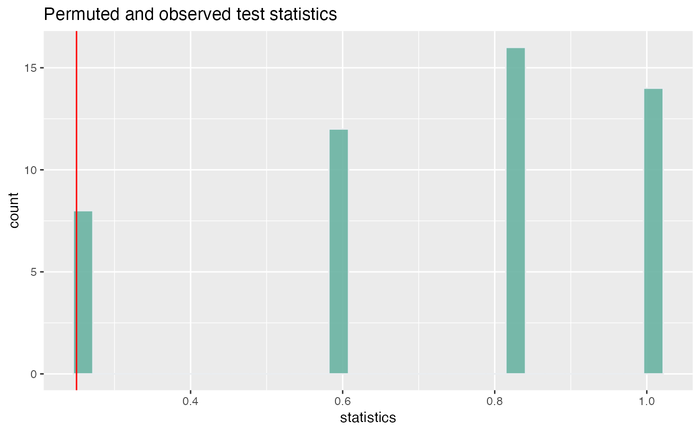

R/permutation-testing.R
cluster_permute_test.RdThis tests a statistic for association between labels (for instance, cluster/clonal ID) and covariates (for instance, subject or treatment) by permuting the link between the two.
Each observation represents a cell.
statistic is any function of labels
cluster_permute_test(
ccdb,
cell_covariate_keys,
cell_label_key = ccdb$cluster_pk,
cell_stratify_keys,
statistic,
contrasts = NULL,
n_perm,
alternative = c("two.sided", "less", "greater"),
sanity_check_strata = TRUE,
...
)ContigCellDB
character naming fields in ccdb$cell_tbl
character naming a single field in ccdb$cell_tbl
optional character naming fields in ccdb$cell_tbl under which permutations of cell_label_key will occur.
This means that the test will occur conditional on these covariates.
Must be disjoint from cell_covariate_keys.
function of label (vector) and covariate (data.frame). If this returns a vector, then by default each level will be compared against each other, pairwise, but see the next section.
an optional list of numeric vectors. Each will be dotted with the statistic, or optionally a matrix provided in which case each row would be tested one-by-one.
number of permutations to run
character naming the direction statistic should be fall under the alternative hypothesis
logical, should cell_stratify_keys be checked for sanity?
passed to statistic
a list containing the observed value of the statistic, the permuted values of the statistic, its expectation (under independence), a p-value, and the Monte Carlo standard error (of the expected value).
library(dplyr)
# covariate should name one or more columns in `cell_tbl`
cluster_idx = c(1, 1, 1, 2, 2, 3, 3)
subject = c('A', 'A', 'B', 'B', 'B', 'C', 'C')
contig_tbl = tibble(contig_pk = seq_along(cluster_idx), cluster_idx, subject)
ccdb_test = ContigCellDB(contig_tbl = contig_tbl, contig_pk = 'contig_pk',
cell_pk = c('contig_pk', 'subject', 'cluster_idx'), cluster_pk = 'cluster_idx')
ccdb_test$cell_tbl
#> # A tibble: 7 × 3
#> contig_pk subject cluster_idx
#> <int> <chr> <dbl>
#> 1 1 A 1
#> 2 2 A 1
#> 3 3 B 1
#> 4 4 B 2
#> 5 5 B 2
#> 6 6 C 3
#> 7 7 C 3
clust_test = cluster_permute_test(ccdb_test, 'subject', 'cluster_idx',
statistic = purity, n_perm = 50)
library(ggplot2)
plot_permute_test(perm_test = clust_test)
#> Loading required namespace: cowplot
#> `stat_bin()` using `bins = 30`. Pick better value with `binwidth`.

tidy.PermuteTest(clust_test)
#> # A tibble: 50 × 5
#> statistics observed expected p.value mc.se
#> <dbl> <dbl> <dbl> <dbl> <dbl>
#> 1 0.6 0.25 0.731 0.02 0.0364
#> 2 1 0.25 0.731 0.02 0.0364
#> 3 0.25 0.25 0.731 0.02 0.0364
#> 4 0.6 0.25 0.731 0.02 0.0364
#> 5 0.6 0.25 0.731 0.02 0.0364
#> 6 1 0.25 0.731 0.02 0.0364
#> 7 0.833 0.25 0.731 0.02 0.0364
#> 8 0.6 0.25 0.731 0.02 0.0364
#> 9 0.25 0.25 0.731 0.02 0.0364
#> 10 0.833 0.25 0.731 0.02 0.0364
#> # … with 40 more rows